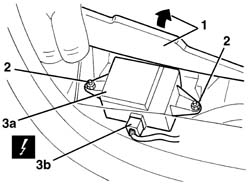

5580E34 car anti-theft device anti-lift sensor - r r following electrical circuit checke
- Path
- Procedures > 55 ELECTRICAL EQUIPMENT > 5580 SPECIAL ACCESSORIES > 5580E anti-theft device > 5580E34 car anti-theft device anti-lift sensor - r r following electrical circuit checke
- Kind
- repair procedure (removal / refitting; the operation number is the code)
- Applies to
- all engines; all production periods
- Interactive page
- https://sloeber94.github.io/elrnDB-a156/en/#/3238548
Applies to: all engines; production: da 03/02 a 09/03, da 10/03
 Removing
Removing
 Refitting
Refitting7040L40 front compartment scuff strip - r r (right side).
7040H36 central trim lower element - r r (right side).
1. Lift up the carpet slightly in the area of the tilt sensor.
2. Unscrew the bolts
3. Move the tilt sensor slightly and disconnect the electrical connection.
 | Name | Connector |
|---|---|---|
3 | Anti-tilt sensor |

Applies to: all engines; production: da 03/02 a 09/03, da 10/03
Refitting
RemovingCheck that the tilt sensor is not damaged.
Connect the electrical connection
Place the tilt sensor in position.
Tighten the screws.
Reposition the carpet.
7040H36 central trim lower element - r r (right side).
7040L40 front compartment scuff strip - r r (right side).